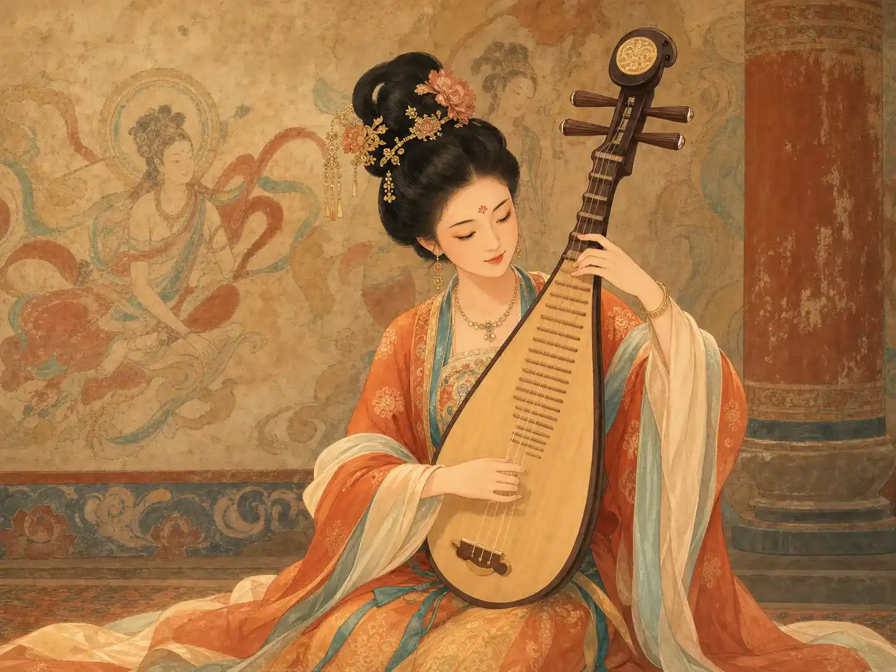
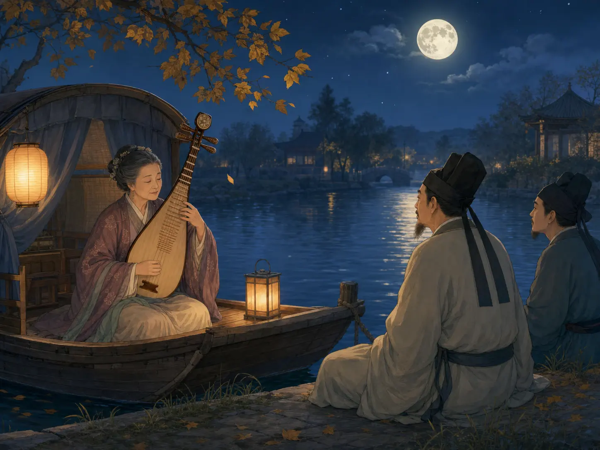

琵琶：会唱歌的木头
Pipa: Wood That Can Sing
Page 1
它从很远的地方一路走来，后来在中国有了自己的声音
It Came from Far Away and Slowly Found Its Own Voice in China

Long ago, the pipa was already appearing in A powerful and creative time in China about 1,300 years ago. music and dance, and in the murals of A famous place in northwestern China known for its cave murals..
琵琶不是一下就长成今天这个样子的。很多人觉得，它和从中亚、西亚传来的弹拨乐器有关系，后来在中国慢慢变成了今天的样子。
到了A powerful and creative time in China about 1,300 years ago.，琵琶已经非常流行。你能在A famous place in northwestern China known for its cave murals.的壁画里看到它，也能在古代的歌舞和宴会想象里看到它。
所以琵琶很像一位走了很远路的客人。它来到中国以后，慢慢住下来，也慢慢长出了自己的声音。
The pipa did not become today's instrument all at once. Many people think it is connected to plucked instruments that traveled from Central and Western Asia, and then slowly changed in China.
By the A powerful and creative time in China about 1,300 years ago., the pipa was already very popular. You can see it in the murals of A famous place in northwestern China known for its cave murals., and you can imagine it in old songs, dances, and banquets too.
So the pipa is a little like a traveler who came a long way. After arriving in China, it slowly settled down and slowly found its own voice.
Page 2
一位诗人听见它，就写下了像下雨一样的声音
One Poet Heard It and Wrote About Rain and Whispers

A famous Chinese poet who lived about 1,200 years ago. heard pipa music by the river, and later wrote the famous poem The Song of the Pipa Player.
有一天晚上，诗人A famous Chinese poet who lived about 1,200 years ago. 在江边听见了琵琶声。后来，他写下了很有名的《琵琶行》。
他觉得粗一点的弦像急雨，细一点的弦像人在轻轻说话。声音一下密，一下轻，好像很多小珠子掉在盘子上。
这就是琵琶很特别的地方。它不只是能弹出音，还能让人一下想到雨声、悄悄话，和很多很多画面。
One night, the poet A famous Chinese poet who lived about 1,200 years ago. heard pipa music by a river. Later, he wrote the famous poem The Song of the Pipa Player.
To him, the thicker strings sounded like fast rain, and the thinner strings sounded like quiet whispers. The music could be full and busy one moment, then light and soft the next.
That is one special thing about the pipa. It does not only make notes. It can make people think of rain, private voices, and many clear pictures in the mind.
Page 3
一个人抱着一把琴，也能让你听见战鼓和马蹄
One Player Can Make You Hear Drums and Hooves
Sometimes the pipa can whisper. Sometimes it can suddenly race forward like drums and hoofbeats together.
有一首很有名的琵琶曲，叫《十面埋伏》。它不是靠歌词讲故事，而是靠手指在弦上飞快地跑。
你听着听着，可能会觉得自己听见了战鼓、号角，还有马蹄声。可眼前明明只有一个人和一把琴。
这说明琵琶很会讲故事。它安安静静抱在怀里，可一弹起来，世界就忽然变大了。
There is a famous pipa piece called Ambush from Ten Sides. It does not tell its story with words. It tells it with fingers racing across the strings.
As you listen, you may think you hear war drums, horns, and hoofbeats, even though there is only one player and one instrument in front of you.
That shows how well the pipa tells stories. It rests quietly in the arms, but once it begins, the world suddenly feels much bigger.
Page 4
敦煌壁画里，还有一位把琵琶背到身后去弹的飞天
In Dunhuang, There Is Even a Flying Figure Playing Behind the Back
在A famous place in northwestern China known for its cave murals.壁画里，有一位很有名的飞天，把琵琶放到背后去弹。这个姿势看起来又轻又美，所以很多人一下就记住了它。
有人觉得这是真的技巧，也有人觉得更像画家在用想象力画出“飞”起来的感觉。不管怎样，它都告诉我们：琵琶不只会发声，也很会给人留下画面。
In the murals of A famous place in northwestern China known for its cave murals., there is a famous flying figure who plays the pipa behind the back. The pose looks light and beautiful, so many people remember it at once.
Some people think it may have been a real trick. Others think it was the painter using imagination to show the feeling of flying. Either way, it tells us something: the pipa does not only make sound. It also leaves strong pictures in the mind.
小结
In Summary
琵琶从很远的地方走来，后来在中国长出了自己的声音。
它能像雨，像悄悄话，也能像鼓声和马蹄声。难怪很多人觉得，琵琶不只是乐器，还是一个很会讲故事的人。
The pipa came from far away and later grew its own voice in China.
It can sound like rain, like whispers, or like drums and hoofbeats. No wonder many people feel that the pipa is not only an instrument. It is also a wonderful storyteller.